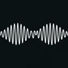
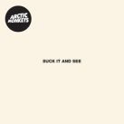
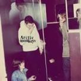
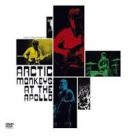
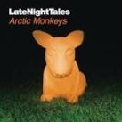

Home
About
Discografie
Media
Fanclub
Discografie
Muziek
Da frame 2R - Arctic Monkeys Live at the Apollo
Da Frame 2R by Arctic Monkeys - www.netosdesalim.com.br on Grooveshark
Nettles - Arctic Monkeys Live at the Apollo
Nettles by Arctic Monkeys - www.netosdesalim.com.br on Grooveshark
Plastic Tramp - Arctic Monkeys Live at the Apollo
Plastic Tramp by Arctic Monkeys - www.netosdesalim.com.br on Grooveshark




